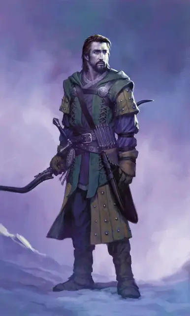

Артус Симбер
Artus Cimber
Средний Гуманоид (Человек), хаотично-добрый, именной НИП

Класс Доспеха 14 (проклёпанный кожаный доспех)
Хиты 82 (15к8 + 15)
Скорость 30 футов
| мод | спас | ||
|---|---|---|---|
| СИЛ | 10 | +0 | +0 |
| ЛОВ | 15 | +2 | +5 |
| ТЕЛ | 13 | +1 | +1 |
| мод | спас | ||
|---|---|---|---|
| ИНТ | 17 | +3 | +3 |
| МДР | 16 | +3 | +3 |
| ХАР | 18 | +4 | +7 |
Навыки Выживание +9, История +9, Обман +7, Проницательность +6
Чувства пассивное Восприятие 13
Языки Общий, Гоблинский, Дварфийский, Драконий
Опасность 7 (2900 опыта)
Бонус мастерства +3
Особенности
Специальное снаряжение. Артус носит кольцо зимы [ring of winter]. Ни он, ни кольцо не могут быть целью магии прорицания или быть обнаружены магическими сенсорами. Пока Артус носит кольцо и настроен на него, он перестаёт стареть и имеет иммунитет к урону холодом и воздействиям холодных температур.
Артус также владеет Закладкой – это кинжал +3 с дополнительными магическими свойствами. В качестве бонусного действия, Артус может активировать любой из следующих свойств при настройке на кинжал, при условии, что оружие у него в руке:
• Воззвать к синему камню, установленному в рукояти кинжала, чтобы сотворить яркий свет в радиусе 20 футов и тусклый свет в пределах ещё 20 футов или отключить свечение камня.
• Превратить кинжал в компас, положив к себе на ладонь, кинжал указывает на север.
• Наложить при помощи кинжала заклинание переносящая дверь [dimension door]. Это особое действие нельзя повторно совершать до следующего рассвета.
• Наложить при помощи кинжала заклинание принуждение [compulsion] (Сл спасброска 15). Диапазон заклинаний увеличивается до 90 футов, но целью заклинание могут быть только пауки, которые являются зверями. Это особое действие нельзя повторно совершать до следующего рассвета.
Персонализация Артуса Симбера.
Идеал. «Для меня важно сохранение знаний и истории».
Привязанность. «Я давно хочу воссоединиться с моей женой, Алисандой».
Слабость. «Я мало доверяю незнакомцам – в частности, авантюристам».
Действия
Мультиатака. Артус совершает три атаки Закладкой или своим длинным луком.
Закладка (Кинжал +3). Рукопашная атака оружием: +8 к попаданию, досягаемость 5 фт., одна цель. Попадание: 7 (1к4 + 5) колющего урона.
Длинный лук. Дальнобойная атака оружием: +5 к попаданию, дистанция 150/600 фт., одна цель. Попадание: 6 (1к8 + 2) колющего урона.
Кольцо зимы. Кольцо Зимы имеет 12 зарядов и ежедневно, на рассвете, восстанавливает все израсходованные заряды. Пока Артус носить кольцо настроен на него, он может расходовать необходимое количество зарядов, чтобы активировать одно из следующих свойств:
• Артус может потратить 1 заряд и использовать кольцо, чтобы снизить температуру в радиусе радиуса 120 футов, с центром в точке, которую он может видеть в пределах 300 футов от него. Температура в этой области падает на 11 градусов в минуту, до минимума -34 градусов по Цельсию. Иней и лёд начинают формироваться на поверхности, когда температура опускается ниже 0 градусов. Этот эффект является постоянным, если только Артус не использует кольцо для прекращения эффекта в качестве действия, после чего температура в области возвращается в норму со скоростью 5,5 градусов в минуту.
• Артус может наложить одно из следующих заклинаний из кольца (Сл спасброска 17), расходуя необходимое количество зарядов: длань Бигби [Bigby’s hand] (2 заряда; рука состоит из льда, иммуна к урону холодом и наносит сжатым кулаком дробящий урон (вместо уроном энергией)), конус холода [cone of cold] (2 заряда), обледенение (3 заряда; как окаменение [flesh to stone] за исключением того, что цель превращается в лед с прочностью и долговечностью камня), град [ice storm] (2 заряда), Отилюков ледяной шар [Otiluke’s freezing sphere] (3 заряда), метель [sleet storm] (1 заряд), шипы [spike growth] (1 заряд; шипы состоят изо льда) или ледяная стена [wall of ice] (2 заряда).
• Артус может израсходовать необходимое количество зарядов и использовать кольцо для создания неодушевлённого ледяного объекта (2 заряда) или оживлённого ледяного существа (4 заряда). Ледяной объект не может иметь никаких движущихся частей, должен быть в состоянии уместиться в 10-футовом кубе и иметь плотность и долговечность металла или камня (по выбору Артуса). Ледяное существо должно быть смоделировано по подобию зверя с опасность 2 или меньше. Ледяное существо имеет те же характеристики, что и зверь, взятый за основу, со следующими изменениями: существо – конструкт с уязвимостью к урону огнём, иммунитетом к урону холод и яд и иммунитетом к следующим состояниям: очарованный, истощение, испуганный, парализованный, окаменевший и отравленный. Ледяное существо подчиняется только командам своего создателя. Ледяной объект или существо появляются в свободном пространстве в 60 футах от Артуса. Существо или объект превращается в лужу обычной воды через 24 часа или, когда его хиты опускается до 0. В экстремально жарких условиях он теряет 5 (1к10) хитов в минуту. Используйте рекомендации в главе 8 Руководства Мастера, чтобы определить хиты неодушевлённого объекта, если это станет необходимыми.
Описание
Бывший член Арфистов, Артус Симбер – хранитель Кольца Зимы. Он нашёл кольцо в джунглях Чульта, где также встретил свою жену, Алисанду. Кольцо останавливает естественное старение, что и позволило Артусу выйти далеко за пределы его естественной продолжительности жизни. Кольцо также пресекает магическим попыткам узнать своё местоположение и положение своего владельца. Над костяшками пальцев Артус вытатуировал имена своих дорогих животных-спутников – пару говорящих вомбатов по имени Дырт и Лагг.
Артус потратил большую часть своей жизни, пытаясь уберечь Кольцо Зимы от злых рук, но он вернулся на Чульт, чтобы воссоединиться со своей любимой Алисандой, которая исчезла вместе с городом Мезро во время Магической чумы. Не дожидаясь, самостоятельного возвращения Алисанда и Мезро, Артус ищет способы вернуть их. Он считает, что Саджа Н’база, древняя охранная нага, может ему помочь. Таким образом, он сосредоточен на поиске развалин Оролунга, где, как говорят, обитает нага. Судьба свела Артуса со спутником по имени Дрэгонбэйт, с которым он познакомился в Порту Нянзару. Они всегда в движении. Следовательно, их местоположение в приключении определяется случайным образом.
Использование Артуса. Артус никогда не был в Ому, и он понятия не имеет, где находится город. Однако у него есть мощный артефакт в его распоряжении и доброе сердце. Если персонажи объяснят, почему они прибыли на Чульт, Артус откладывает свои личные поиски и предлагает свою помощь им в поисках Ому и уничтожить Поглотителя душ.
Впервые, когда ситуация вынуждает Артуса использовать Кольцо Зимы, он предупреждает персонажей о том, что злые силы ищут кольцо, и что его присутствие в партии может подвергнуть героев опасности.